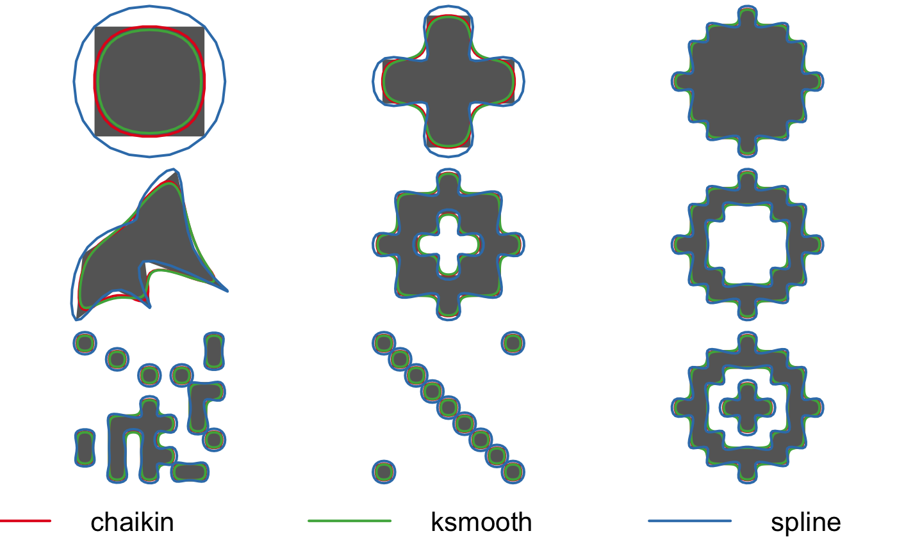
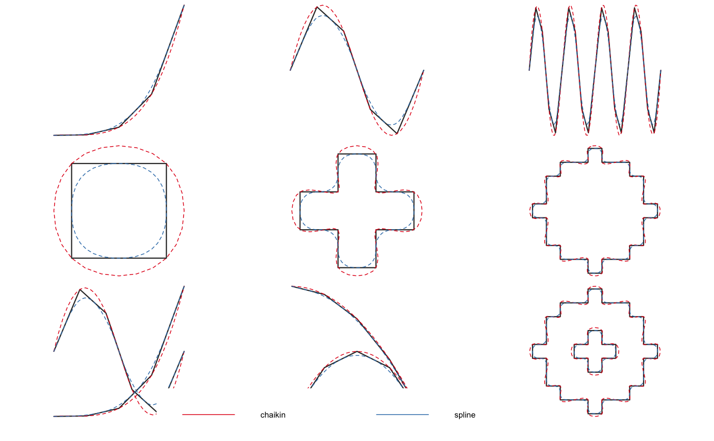

Smooth out the jagged or sharp corners of spatial lines or polygons to make them appear more aesthetically pleasing and natural.
smooth(x, method = c("chaikin", "spline"), ...)
| x | spatial features; lines or polygons from either the sf or sp packages. |
|---|---|
| method | character; specifies the type of smoothing method to use.
Possible methods are: |
| ... | additional arguments specifying the amount of smoothing, passed on to the specific smoothing function, see Details below. |
A smoothed polygon or line in the same format as the input data.
Specifying a method calls one of the following underlying smoothing functions. Each smoothing method has one or more parameters that specify the extent of smoothing. Note that for multiple features, or multipart features, these parameters apply to each individual, singlepart feature.
smooth_chaikin(): Chaikin's corner cutting algorithm smooths a curve by
iteratively replacing every point by two new points: one 1/4 of the way to
the next point and one 1/4 of the way to the previous point. Smoothing
parameters:
refinements: number of corner cutting iterations to apply.
smooth_spline(): spline interpolation via the stats::spline()
function. This method interpolates between existing vertices and the
resulting smoothed feature will pass through the vertices of the input
feature. Smoothing parameters:
vertex_factor: the proportional increase in the number of vertices in
the smooth feature. For example, if the original feature has 100
vertices, a value of 2.5 will yield a new, smoothed feature with 250
vertices. Ignored if n is specified.
n: number of vertices in each smoothed feature.
See specific smoothing function help pages for references.
smooth_chaikin() smooth_spline()
library(sf) # compare different smoothing methods # polygons par(mar = c(0, 0, 0, 0), oma = c(4, 0, 0, 0), mfrow = c(3, 3)) p_smooth_spline <- smooth(jagged_polygons, method = "spline") p_smooth_chaikin <- smooth(jagged_polygons, method = "chaikin") for (i in 1:nrow(jagged_polygons)) { plot(st_geometry(p_smooth_spline[i, ]), col = NA, border = NA) plot(st_geometry(jagged_polygons[i, ]), col = "grey40", border = NA, add = TRUE) plot(st_geometry(p_smooth_chaikin[i, ]), col = NA, border = "#E41A1C", lwd = 2, add = TRUE) plot(st_geometry(p_smooth_spline[i, ]), col = NA, border = "#377EB8", lwd = 2, add = TRUE) }par(fig = c(0, 1, 0, 1), oma = c(0, 0, 0, 0), new = TRUE) plot(0, 0, type = "n", bty = "n", xaxt = "n", yaxt = "n", axes = FALSE)legend("bottom", legend = c("chaikin", "spline"), col = c("#E41A1C", "#377EB8"), lwd = 2, cex = 2, box.lwd = 0, inset = 0, horiz = TRUE)# lines par(mar = c(0, 0, 0, 0), oma = c(4, 0, 0, 0), mfrow = c(3, 3)) l_smooth_spline <- smooth(jagged_lines, method = "spline") l_smooth_chaikin <- smooth(jagged_lines, method = "chaikin") for (i in 1:nrow(jagged_lines)) { plot(st_geometry(l_smooth_spline[i, ]), col = NA) plot(st_geometry(jagged_lines[i, ]), col = "grey20", lwd = 3, add = TRUE) plot(st_geometry(l_smooth_spline[i, ]), col = "#E41A1C", lwd = 2, lty = 2, add = TRUE) plot(st_geometry(l_smooth_chaikin[i, ]), col = "#377EB8", lwd = 2, lty = 2, add = TRUE) }par(fig = c(0, 1, 0, 1), oma = c(0, 0, 0, 0), new = TRUE) plot(0, 0, type = "n", bty = "n", xaxt = "n", yaxt = "n", axes = FALSE)legend("bottom", legend = c("chaikin", "spline"), col = c("#E41A1C", "#377EB8"), lwd = 2, cex = 2, box.lwd = 0, inset = 0, horiz = TRUE)